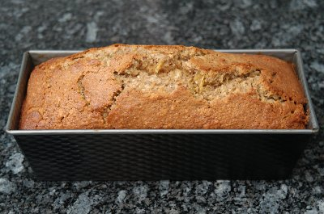

| Zutaten: | |
| 4 | Eier |
| 100 g | Butter |
| 350 g | Mehl |
| 1 Päckchen | Backpulver |
| 300 g | Zucker oder Rohrzucker |
| 2 TL | Zimt |
| 1 Priese | Salz |
| 1 | Zitrone |
| 250 g | Kürbis, fein geraffelt |
| 200 g | Gemahlene Haselnüsse |
Eier und Butter schaumig rühren.
Mehl und Backpulver dazu sieben. Zucker, Zimt, Salz, Zitronensaft, Zitronenschale, Kürbis Haselnüsse dazugeben und gut vermischen.
Masse in eine gut eingefettete mit Paniermehl bestreute Cake- oder Kuchenform geben.
Bei 180°C auf unterster Rille im vorgeheizten Ofen ca. 1 Stunde backen.
Fenner's Kürbisrezepte, Herbert Eigenmann, Code: KÜK
Hat ausgezeichnet geschmeckt und wurde von den Arbeitskollegen sehr wohlwollend kommentiert. RE 21.10.2009
@LINKBACK_TAG@ @WAKELOCK@